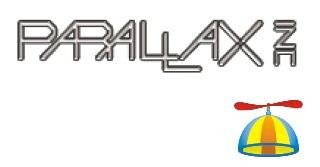
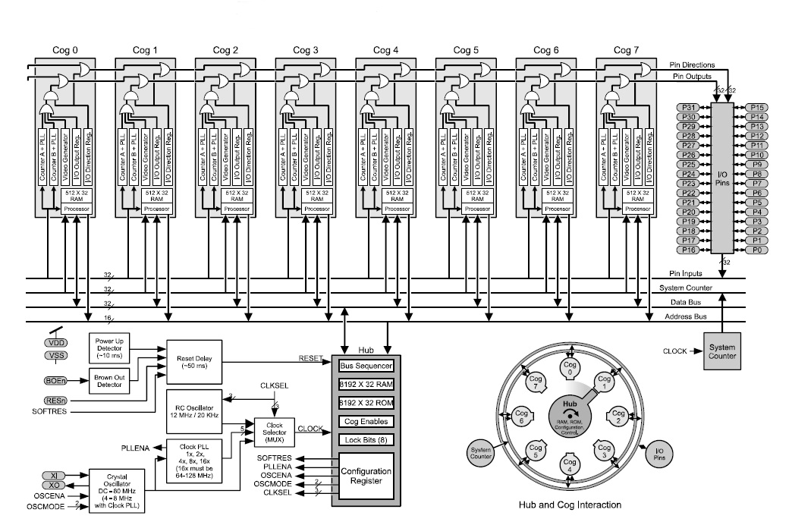
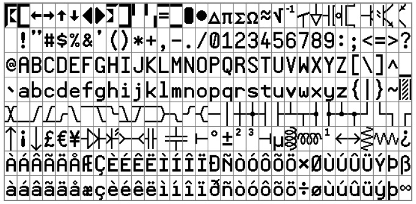
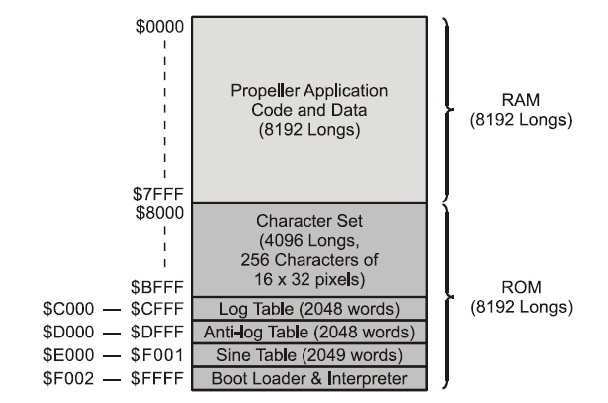
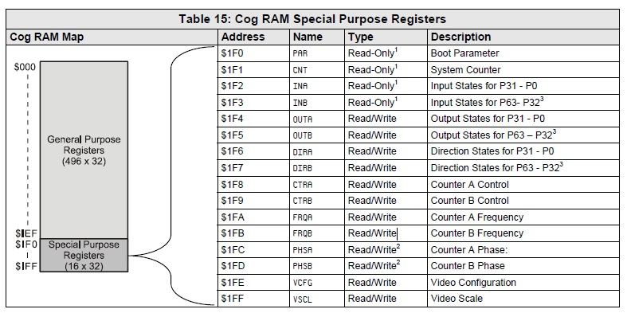

新アーキテクチャ？propeller マイコン

はじめに
propeller とはPARALLAX 社が開発した32bit マイコンのことです。
８つの32bitCPU を持ち、他社のマイコンとは大きく構造が異なります。
つい最近知ったばかりですが勉強のため、この特殊なマイコンを
わかりやすく解説しようと思います。
特有の構造・機能

図1・ブロック図
新手のCPLDの類に見えるかもしれません。あたかもCPLDのマクロセルのようにCog0からCog7と書かれた
ブロックのひとつひとつが実はワンチップマイコンなのです。それぞれのCogには最高２０MIPSの３２Bitプロセッサと４KbyteのRAM、二つのカウンタ、そしてビデオ信号ジェネレータが付いており、せれらがIOピンやシステムバスを共有する形で接続されています。
各Cogの出力がORされる
1/Oピンは図1にあるようにCogO〜Cog7の出力が
ORされる形になっています.いずれか一つのマイコ
ンが出カモードに指定したピンが出カピンになり,い
ずれか一つが`1'を書いていれば`1'が出力されます。
ラウンド・ロビン
ー方,メインROM/RAMなどの共有リソース,マ
ニュアルでは mutually―exclusive resources(直訳す
ると相互排他リソース)と呼ばれているものはリング
状の中央にあって,これが各Cogと接続されていま
す.Cogという名称は,何かの略称との断りは出てこ
ないので,おそらく,英語そのままの「歯車」という
意味ではないかと思います。噛み合いながらくるくる
回るというイメージからきているのかもしれません。
一般的なマルチ・プロセッサの場合,共有リソース
ヘのアクセスはバスヘのアクセス権を調停回路によっ
て制御し,1度に一つのプロセッサだけがバスを利用
します。これに対してPrOpellerの場合には,共有リ
ソースが^定周期で各Cogを巡回するラウンド・ロ
ビン方式を採用しています.PrOpellerという名称は
共有リソースが一定周期で各Cogを
巡回するらラウンド・ロビン方式を採用しています。
Propellerという名称もこの巡回動作にちなんだものなのでしよう。
2システム・クロックごとに共有リソースが各Cogを巡回する
バスのアクセス権移動は2システム・クロックごと
に行われますので,1周するのに16システム・クロッ
クかかります。共有リソースにアクセスしようとした
とき,自分の権利が移動してしまった直後であれば
最長で15クロツク待つことになります。
スケジューリングは,COgが共有リソースを必要と
するか否かに関係なく行われるため,使用効率の面で
は不利です.しかしハードウェアが単純になることや
他のCogの動作状況によって平均アクセス・タイム
の変動が起きないというのは利点です。
DIPパッケージで最高.. 160 MiPS
Propellerは44ピンのLQFPパッケージ、
QFNパッケージに加えて40ピンのDIPパッケージもあります。
1/Oピンの数などは同じなので,DIPパッケージで
もPropelerの全機能を試すことができます.外部か
ら与えるクロックは最高で80 MHzで,各Cog内の
CPUは最大20 MIPSで動作するので,チップ全体で
の処理能力は単純計算で最大160 MIPSとなります。
もっともこれは計算上の話で,Cogが共有リソース
をアクセスするときにはアクセス権が回ってくるまでウェイトします。

図２・フォント
各Cogがビデオ・コントローラを内蔵する
ビデオ・ジェネレータ(ビデオ・コントローラ)が内
蔵されているのも,PrOpellerの一風変わったところ
です。ビデオ・コントローラはVGA準拠信号,また
はコンポジット・ビデオ信号を生成します。
しかもビデオ・コントローラは共有リソースではな
く, 各Cogが持っています。
各Cogがビデオ・コントローラを持っているため
対戦型のゲームのように複数のデイスプレイを利用し
たアプリケーションを作成したり,表示画面と設定画
面を分離するような使い方もできることでしよう。
また,ビデオ表示機能をサポートするため,共有
ROMには図2に示すキャラクタ・フオント・データ
が入っています。一般的な半角英数字のほかに回路図
用やタイミング図用のシンボルが含まれているのはお
もしろいところです。

図３・RAMマップ
プログラムはRAM上で動作する
図3はPropellerのメイン・メモリ(共有メモリ・マ
ップ)です.Propcller内蔵のROMには,文字フォン
ト・データやSINテーブルやLOGテーブル,ブート
ローダのほか,Propeller専用のアプリケーシヨン
記述言語であるSpin用のインタプリタなどが書き込まれ
ています。フラッシユ・メモリではないので,書きかえは行えません。
Propellerのアプリケーシヨン・プログラムはホス
PCや外部の12c_EEPROMからメインRAM(共有
RAM)にダウンロードされて動作します。

図４・CogRAMマップ
各Cogが専用に持つCogRAM
各Cogが持っている512ワード(4Kバイト)の
RAM(CogRAM)の割り当ては図4のようになってい
ます.512ワードのうち最後の16ワードぶんが1/O関係の
レジスタに割り付けられています。
それ以外の部分は汎用レジスタと名づけられていますが,実態は
RAMそのものです。
Propeller専用プログラミング言語Spinとアッセンブリ言語
Propellerは独立したワンチップ・マイコンによる
マルチ・プロセッサ構造であり,I/OやメインROM/
RAMを共有する構造になっています。プログラミン
グもマルチ・プロセッサ構造に対応したものになります。
このためPropellerではSpinという専用言語を用意
しています。Spinで書かれたプログラムはバイナリ
形式の中間コードにコンパイルされてSpinインタプリタで実行されます。
通常,PropellerのアプリケーシヨンはSpinコード
のみ,あるいはSpinコードとアセンブリ言語で記述されます。
Spinコードとアセンブリ言語のソースコ―ドは一つのファイルの中に同時に記述することが
できます。
サンプルプログラムを使った用例はこちらへ
Propellerの特徴・割り込み機能がない
Propellerには割り込みという考えがありません。
割り込みの考え方は,プログラムの実行中に急ぎの対
応を要する処理が発生した場合に,現在の処理をいっ
たん中断して緊急性の高い処理を先に行うものです。
Propellerには8個のCog(CPU)があります。それ
ぞれのCogは独立して動作するので,このうちの一
つを緊急性の高い処理に対応させれば,他のCogは元の処理に専念できます。
なので通常のCPUが一個しかないマイコンと違い、割り込み
を使わなくても作業を分担できるのです。通常の割り込み処理中は当然メインの処理は止まっ
てしまいますが,Propellerの場合はメインの処理を
途切れさせることなく他の処理も行えるのです。
通常はマルチタスク・モニタを利用するなどして時
分割処理をしていた作業も,Propelerならば各Cog
にそれぞれのタスクを割り振るだけで並列に処理でき
るということに気づきます。
めんどうなタスク・スイ
ッチングの処理やタスクの動作状態管理なども必要な
いわけで「時分割」ならぬ「非分割」マルチタスクと
なるわけです。
Propellerの開発・評価キット
Parallax社のサイトには,Propeller用のデモキット
や, Propellerを使ったゲームの
開発セット(HYDRAGame Development Kit)などが用意されています。
Propeller Starter Kit(メーカ型番 :32300）
と,ブレッドボード・ベースの Propeller Education
Kit(メーカ型番:32305)がおすすめです。40ピンの
DIPパッケージ品に実験用の部品セット,ブレッドボ
ードという構成なので,EducationKit相当品を自分
で用意することも難しいことではありません。（私は自分で用意しました）
まとめ
私が初めてPropellerマイコンを知ったのは秋月通商です。多々あるマイコンの内の一つで、周りに使っている人が
おらず興味を持っていませんでした。ある時、映像出力機能を内蔵しているということで資料を見た時、あまりのユニーク
さに笑ってしまいました。
今まではワンチップ・マイコンの表示装置として一
般的に扱えたのはキャラクタ液晶程度で,グラフイ
ク表示は簡単ではありませんでしたが,Propellerを
利用すれば、ほとんど外付け部品を必要とせずVGAやコンポジット・ビデオ出力が行え, さらに複数画面表示
も簡単にできるのです。
ただ、あまりに独特なアーキテクチャを使用しているため、手に取りずらいと思われますので、さまざまな手段を
用いて紹介することにしました。このページを読んで、是非Propellerで遊んでみてほしいです。
おまけ
これは私の飼い猫です。いつもキリッ！っとした顔をしてます。